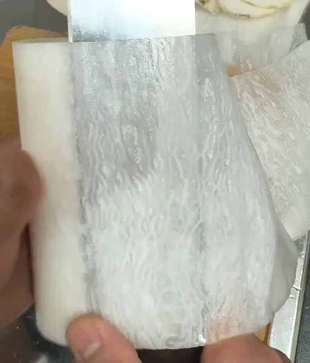

第五章 · Chapter Five
包丁の使い方 — Hōchō no Tsukaikata
Japanese knives are thinner, harder, and keener than what most cooks trained on. The technique adjusts accordingly: less force, more geometry, and the right stroke for the right blade.
First Principles · 握り方
Every stroke in this chapter starts from the same place: a pinch, not a fist.
The pinch grip: thumb and the side of the index finger pinch the blade itself just ahead of the handle; the remaining three fingers wrap the handle lightly. The hand steers steel directly — the handle is just a counterweight. Grip pressure is a 3 out of 10; the knife's sharpness does the work, and a tense fist is what tires and slips.
For single-bevel knives (柳刃, 薄刃, 出刃), the index finger often extends along the spine instead — the traditional pointing grip that controls the long draw of a sashimi cut and keeps the blade tracking straight despite the one-sided grind.
The free hand makes the claw: fingertips curled under, first knuckles vertical, guiding the flat of the blade. The knuckles meter every cut; the fingertips never face the edge.
The Strokes · 切り方
Watch the motion in each diagram — the blade's path is the entire lesson. Japanese cutting is forward-and-down or back-and-down, almost never straight down with force.
押し切り
Oshigiri · the push cut
The fundamental Japanese stroke. The blade moves forward and down in one diagonal motion, slicing as it descends — never crushing straight down. The tip stays low; the heel finishes the cut as the knife glides forward.
牛刀 · 三徳 — onions, cabbage, most prep
引き切り
Hikigiri · the draw cut
The blade draws backward through the food, heel to tip, in one long pull. On a 300 mm yanagiba this single stroke is the whole technique of sashimi: one motion, full blade length, never a saw. Also the stroke for tomatoes and anything with delicate skin.
柳刃 · 筋引き — sashimi, proteins, soft skins
刻み
Kizami · the tap chop
Rapid, light, vertical strokes with a flat-profiled blade — the full edge meets the board at once, so nothing escapes. The santoku and usuba excel here; the rhythm is wrist-light and fast, not forceful.
三徳 · 薄刃 — herbs, scallions, fine mince
そぎ切り
Sogigiri · the shave slice
The blade lies at a shallow angle and draws through, shaving wide, thin, diagonal slices — more cut surface, faster marination, more elegant presentation. The standard cut for chicken breast, white fish, and shiitake.
牛刀 · 柳刃 — proteins, mushrooms, fuki
The fifth cut · 桂剥き
Katsuramuki — the rotary peel — is the usuba's party piece and the classical test of a Japanese apprentice: the left hand rotates a daikon cylinder against the stationary blade while the right thumb meters thickness, producing one continuous translucent sheet. Practice expectation: months. The exercise teaches everything — edge feel, pressure, patience — which is why it is assigned.

Pairing · 食材と包丁
The working matrix. When in doubt: 牛刀. When it matters: the specialist.
| Ingredient · task | Knife | Stroke | Why |
|---|---|---|---|
| Sashimi from a block (柵) | 柳刃yanagiba | 引き切り one pull | A single full-length draw leaves a light-reflecting cut face; sawing turns it dull |
| Whole fish breakdown (三枚おろし) | 出刃deba | Heel chop + filleting pull | Spine mass for the collar and head; keen tip rides the frame |
| Onion brunoise, cabbage, volume prep | 牛刀gyuto | 押し切り push cut | Belly and length give speed; push cut keeps cells intact, eyes dry-ish |
| Herbs, scallions, garlic — fine work | 三徳santoku | 刻み tap chop | Flat profile lands the whole edge at once — no bruised escapees |
| Daikon sheet, tsuma garnish | 薄刃usuba | 桂剥き rotary peel | Single bevel lies flat against the work; nothing else can do this |
| Tomatoes, soft-skinned produce | 牛刀gyuto | 引き切り draw cut | Drawing lets keenness, not pressure, open the skin |
| Roast / protein portioning | 筋引きsujihiki | 引き切り long pull | Narrow blade, less drag, single-stroke slices that hold their face |
| Poultry off the bone | 骨スキhonesuki | Tip work along joints | Stiff triangular tip tracks cartilage; spares your gyuto's edge |
| Chicken breast, white fish — wide slices | 牛刀gyuto | そぎ切り shave slice | Angled draw maximizes surface for sauce and sear |
"Let the knife fall through the food. Your job is only to aim it."力ではなく刃で切る — cut with the edge, not with force